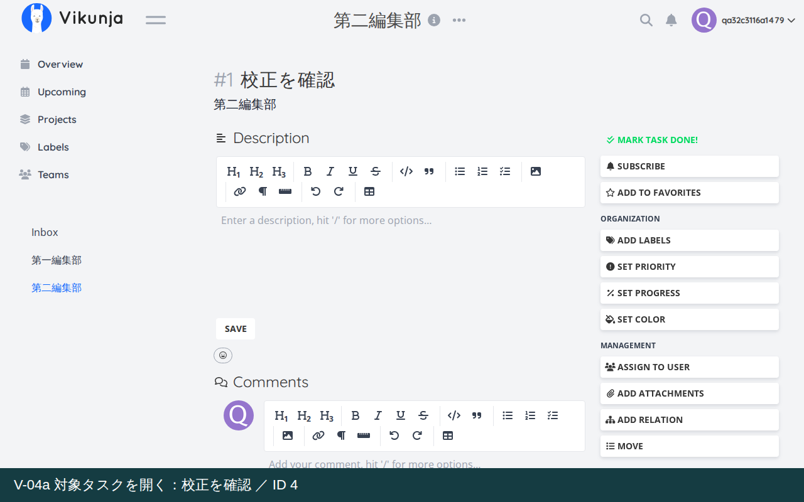
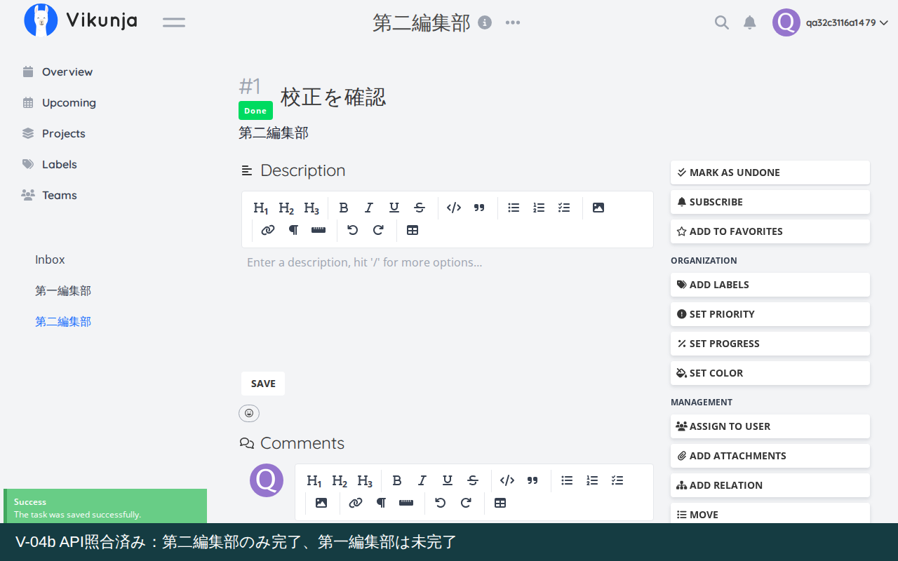

Complete one of two tasks with the same title
Two editorial teams each have a task called 校正を確認 (“check the proofs”). The test completes the task in the second team’s project. It then reads both task IDs through the API: the second team’s task is complete and the first team’s task is still open.
Screenshots




Result The API returned the second team’s task as complete and the first team’s task as open. The two records had different IDs despite sharing a title.
Browser recording
Local recording · Chromium · 72da163